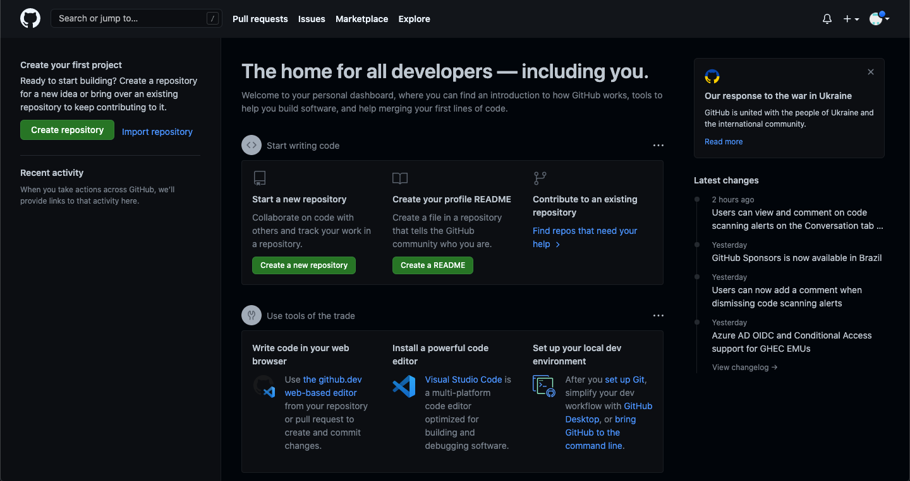
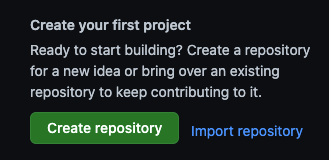
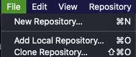
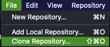

Welcome to Cheespeasa's coding tutorials. In this article you will learn how to make a GitHub repository using GitHub Desktop. This will be necessary later on in order to make your website go online. GitHub repositories can help you organize things and allows for collaboration on another level.
But first, what even is a Github repository?
A GitHub repository is an online copy of a set of files. Whenever you make a change, and then "push" those changes, that online copy gets updated. If your friend wants to help, he simply must "fork" your repository, and then he will have his own copy to work with. Additionally, if you grant access, that friend will be able to update the online copy. This allows for greater collaboration.
The other reason that we are going to use GitHub repositories is that they allow us to host a website for free, using GitHub's servers.
First of all, you must Signup for GitHub. Once you have done that, you will encounter a screen that prompts you to make a new repository. It should look like this:
Then, press the "Create repository" button. It would look like this:
Now, you must follow the next steps carefully:
When you are ready, download GitHub desktop for your machine.
Once it is installed, skip the tutorial, or view it. It is up to you. You now need to clone the repository onto your machine.
At the top bar, there is a tab called "File". It will look like this: Click "File". Then click "Clone Repository", like so:
 In this new menu, you must do the following.